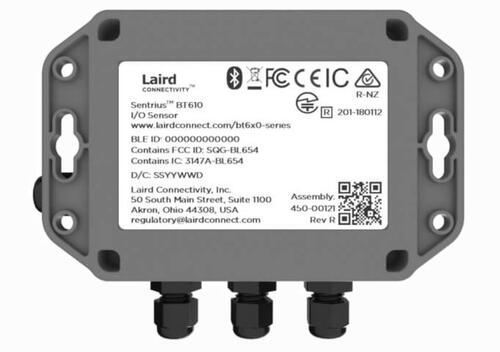
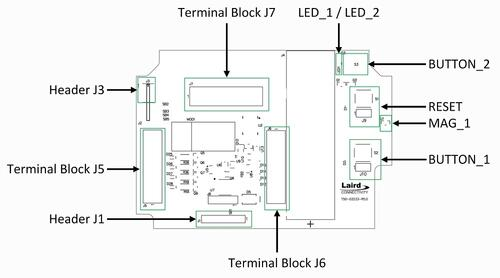

Sentrius BT610 Sensor
Overview
The Sentrius™ BT610 Sensor is a battery powered, Bluetooth v5 Long Range integrated sensor platform that uses a Nordic Semiconductor nRF52840 ARM Cortex-M4F CPU.
The sensor has the following features:
ADC
CLOCK
FLASH
GPIO
I2C
MPU
NVIC
PWM
QSPI
RADIO (Bluetooth Low Energy and 802.15.4)
RTC
Segger RTT (RTT Console)
SPI
UART
WDT

Sentrius BT610 Sensor, rear view
More information about the board can be found at the Sentrius BT610 website [1].
Hardware
Supported Features
The bt610 board supports the hardware features listed below.
- on-chip / on-board
- Feature integrated in the SoC / present on the board.
- 2 / 2
-
Number of instances that are enabled / disabled.
Click on the label to see the first instance of this feature in the board/SoC DTS files. -
vnd,foo -
Compatible string for the Devicetree binding matching the feature.
Click on the link to view the binding documentation.

Sentrius BT610 Sensor, board layout
Connections and IOs
LED
Two LEDs are visible through the BT610 housing lid. Note that the LEDs can be driven either directly, or via PWM. PWM should be used when current consumption is required to be minimised.
LED_1 (red) = LED0 = P1.07 (Red LED 1)
LED_2 (green) = LED1 = P1.03 (Green LED 2)
LED_PWM_1 (red) = LED0PWM = P1.07 (Red PWM LED 1)
LED_PWM_2 (green) = LED1PWM = P1.03 (Green PWM LED 2)
Magnetoresistive sensor
The BT610 incorporates a Honeywell SM351LT magnetoresistive sensor. Refer to the Honeywell SM351LT datasheet [2] for further details.
MAG_1 = SW2 = P1.15 (SM3531LT_0)
External flash memory
A 64Mbit external flash memory part is available for storage of application images and data. Refer to the Macronix MX25R6435FZNIL0 datasheet [6] for further details.
The flash memory is connected to the on-board QSPI device controller.
MX25R64 = QSPI
Voltage reference
A precision 2.5V voltage reference is provided on the V_REF input for use during AD measurements.
This can deliver up to 50mA peak and 20mA continuous current.
Sensor connectivity
The BT610 incorporates three terminal blocks J5, J6 & J7 that allow connectivity to its sensor inputs, as follows.
Terminal Block J5
Pin No. |
Name |
Description |
Direction |
|---|---|---|---|
1 |
EXT_SPI_CS_2 |
External SPI CS 2 |
OUT |
2 |
GND |
GND |
(N/A) |
3 |
AIN4 |
Analog Input 4 |
IN |
4 |
AIN3 |
Analog Input 3 |
IN |
5 |
GND |
GND |
(N/A) |
6 |
AIN2 |
Analog Input 2 |
IN |
7 |
AIN1 |
Analog Input 1 |
IN |
8 |
GND |
GND |
(N/A) |
9 |
DIN2 |
Digital Input 2 |
IN |
10 |
DO2 |
Digital Output 2 |
OUT |
Terminal Block J6
Pin No. |
Name |
Description |
Direction |
|---|---|---|---|
1 |
DO1 |
Digital Output 1 |
OUT |
2 |
DIN1 |
Digital Input 1 |
IN |
3 |
GND |
GND |
(N/A) |
4 |
THERM4 |
Thermistor Input 4 |
IN |
5 |
THERM3 |
Thermistor Input 3 |
IN |
6 |
GND |
GND |
(N/A) |
7 |
THERM2 |
Thermistor Input 2 |
IN |
8 |
THERM1 |
Thermistor Input 1 |
IN |
9 |
GND |
GND |
(N/A) |
10 |
B+ OUT |
Ext. sensor power supply |
(N/A) |
Terminal Block J7
Pin No. |
Name |
Description |
Direction |
|---|---|---|---|
1 |
UART_1_RTS |
UART 1 RTS |
IN |
2 |
UART_1_CTS |
UART 1 CTS |
OUT |
3 |
UART_1_RXD |
UART 1 RXD |
IN |
4 |
UART_1_TXD |
UART 1 TXD |
OUT |
5 |
EXT_I2C_SCL |
External I2C SCL |
OUT |
6 |
EXT_I2C_SDA |
External I2C SDA |
IN/OUT |
7 |
EXT_SPI_CLK/TRACEDATA3 |
Ext. SPI CLK/TRACE DATA 3 |
OUT |
8 |
EXT_SPI_MISO |
External SPI MISO |
IN |
9 |
EXT_SPI_MOSI |
External SPI MOSI |
OUT |
10 |
EXT_SPI_CS_1 |
External SPI CS 1 |
OUT |
Analog inputs
The four external Analog Inputs are multiplexed to a single host microcontroller AD input, AIN_1, via a TI TMUX1204 multiplexer.
Refer to the TI TMUX1204 datasheet [4] for further details.
Signals up to 12V, to a maximum of 50mA, can be applied to the external Analog Inputs.
External Analog Input connections are made to the multiplexer as follows.
Input |
MUX Input |
|---|---|
AIN1 |
S1 |
AIN2 |
S2 |
AIN3 |
S3 |
AIN4 |
S4 |
A TI TCA9538 port expander is used to determine the mode of each Analog Input, for either voltage or current measurement, and also to control the mutliplexer. A high level applied to the appropriate expander port pin enables the associated analog input as a current input; when a low logic level is applied, voltage measurement mode is selected.
Refer to the TI TCA9538 datasheet [5] for further details.
The expander port connections are as follows.
Pin |
Function |
|---|---|
P0 |
AIN1 mode |
P1 |
AIN2 mode |
P2 |
AIN3 mode |
P3 |
AIN4 mode |
P4 |
MUX A0 |
P5 |
MUX A1 |
P6 |
(N/C) |
P7 |
(N/C) |
The following illustrates some possible configuration values for the port expander. Note that it is possible for combinations of voltage and current measurement to be applied such that some external Analog Inputs measure current and others voltage. This is not shown below.
Expander value |
Selected Analog Input & mode |
|---|---|
b’00000000’ |
AIN1, voltage measurement |
b’00000001’ |
AIN1, current measurement |
b’00010000’ |
AIN2, voltage measurement |
b’00010010’ |
AIN2, current measurement |
b’00100000’ |
AIN3, voltage measurement |
b’00100100’ |
AIN3, current measurement |
b’00110000’ |
AIN4, voltage measurement |
b’00111000’ |
AIN4, current measurement |
Circuitry associated with the analog input measurements can be disabled when not in use.
A GPIO is used to control this behaviour, as shown below.
ANALOG_ENABLE |
Behaviour |
|---|---|
0 |
Disabled |
1 |
Enabled |
Thermistor inputs
The four external thermistor inputs are connected to a single AD input, AIN_2, via a TI TMUX1204 multiplexer.
Refer to the TI TMUX1204 datasheet [4] for further details.
External analog input connections are made to the multiplexer as follows.
Input |
MUX Input |
|---|---|
THERM1 |
S1 |
THERM2 |
S2 |
THERM3 |
S3 |
THERM4 |
S4 |
The same port expander used to select external analog inputs is also used to select external thermistor inputs.
The table below defines possible values that can be written.
Expander value |
Selected Analog Input |
|---|---|
b’00000000’ |
THERM1 |
b’00010000’ |
THERM2 |
b’00100000’ |
THERM3 |
b’00110000’ |
THERM4 |
A GPIO line is used to enable electronics associated with thermistor measurement. This is controlled as shown below.
THERM_ENABLE |
Behaviour |
|---|---|
0 |
Enabled |
1 |
Disabled |
Note the thermistor circuit must be calibrated before use. A suggested method for achieving this is described in the BT610 Zephyr Application Thermistor Calibration [7] application note.
Digital inputs
Two external digital inputs are available for connection to external signals. For the digital level being applied to be detected, an appropriate output pin must first be set. This approach is taken to ensure supporting circuitry can be powered down when the input state is not being determined. When in use, the external digital input level can be read from the appropriate input pin.
The output and input pins required are as follows.
Enable Pin |
Input Read Pin |
|---|---|
DIN_1_ENABLE |
DIN_1 |
DIN_2_ENABLE |
DIN_2 |
Digital outputs
Two external digital outputs are available to provide signals to or to directly drive external equipment.
To provide a high level on the external digital output, a high logic level is applied to the appropriate host microcontroller output.
The output pins required are as follows.
Output Pin |
External Sensor Terminal |
|---|---|
DO_1_MCU |
DO1 |
DO_2_MCU |
DO2 |
External power supply
Power can be supplied to external sensors via the B+ OUT terminal. This is enabled by setting the BATTERY_OUTPUT_ENABLE GPIO line. In addition, the external supply can be boosted to 5V by setting the HIGH_SUPPLY_ENABLE GPIO line. When 5V is not selected, the external power supply follows the battery voltage.
Up to 50mA peak and 20mA continuous current can be delivered by the External Power Supply.
External sensor I2C port
External I2C sensors can be connected on the external I2C port. Note that external I2C sensors should be powered from the B+ terminal to ensure applied voltage levels match those expected internally by the board.
Required pins are as follows.
Output Pin |
External Sensor Terminal |
|---|---|
SCL_PIN |
EXT_I2C_SCL |
SDA_PIN |
EXT_I2C_SDA |
External sensor SPI port
Up to 2 external SPI sensors can be connected on the external SPI port. Note that external SPI sensors should be powered from the B+ terminal to ensure applied voltage levels match those expected internally by the board.
Required pins are as follows.
Output Pin |
External Sensor Terminal |
|---|---|
SCK_PIN |
EXT_I2C_SCL |
MOSI_PIN |
EXT_I2C_SDA |
MISO_PIN |
EXT_SPI_MISO |
SDA_PIN |
EXT_I2C_SDA |
CS_GPIOS |
EXT_I2C_SDA |
CS_GPIOS |
EXT_I2C_SDA |
Programming and Debugging
The bt610 board supports the runners and associated west commands listed below.
| flash | debug |
|---|
Applications for the bt610 board configuration can be
built and flashed in the usual way (see Building an Application
and Run an Application for more details); however, the standard
debugging targets are not currently available.
The BT610 features a 10 way header, J3, for connection of a programmer/debugger, with pinout as follows.
Pin No. |
Name |
Description |
|---|---|---|
1 |
3.3V |
Power Supply, 3.3V |
2 |
SWDIO |
Data Input/Output |
3 |
GND |
GND |
4 |
SWDCLK |
Clock Pin |
5 |
GND |
GND |
6 |
SWO |
Trace Output Pin |
7 |
(N/C) |
Not Connected |
8 |
(N/C) |
Not Connected |
9 |
GND |
GND |
10 |
nRESET |
Reset Pin |
Access to the sensor debug UART is facilitated by a 6 pin header, J1, with pinout as follows.
Pin No. |
Name |
Description |
Direction |
|---|---|---|---|
1 |
GND |
GND |
N/A |
2 |
UART_0_RTS |
UART 0 RTS Pin |
IN |
3 |
3.3V |
Power Supply, 3.3V |
N/A |
4 |
UART_0_RX |
UART 0 RX Pin |
IN |
5 |
UART_0_TX |
UART 0 TX Pin |
OUT |
6 |
UART_0_CTS |
UART 0 CTS Pin |
OUT |
Note that pin 3 requires a solder bridge to be closed to enable powering of the BT610 board via the UART connector.
Flashing
Follow the instructions in the Nordic nRF5x Segger J-Link page to install and configure all the necessary software. Further information can be found in Flashing. Then build and flash applications as usual (see Building an Application and Run an Application for more details).
Here is an example for the Hello World application.
First, run your favorite terminal program to listen for output.
NOTE: On the BT610, the UART lines are at TTL levels and must be passed through an appropriate line driver circuit for translation to RS232 levels. Refer to the MAX3232 datasheet [3] for a suitable driver IC.
$ minicom -D <tty_device> -b 115200
Replace <tty_device> with the port where the BT610 can be found. For
example, under Linux, /dev/ttyUSB0.
Then build and flash the application in the usual way.
# From the root of the zephyr repository
west build -b bt610 samples/hello_world
west flash
Note that an external debugger is required to perform application flashing.
Debugging
The bt610 board does not have an on-board J-Link debug IC
as some nRF5x development boards, however, instructions from the
Nordic nRF5x Segger J-Link page also apply to this board, with the additional step
of connecting an external debugger.
Testing Bluetooth on the BT610
Many of the Bluetooth examples will work on the BT610. Try them out: